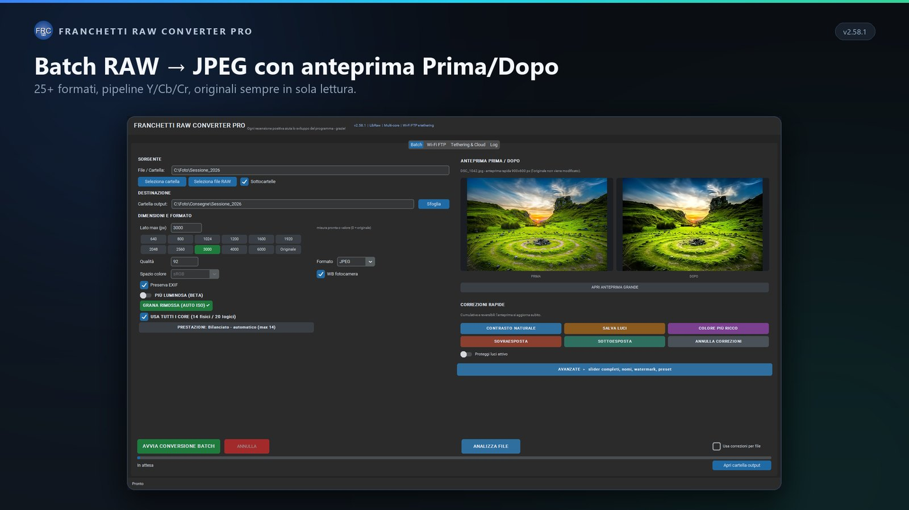
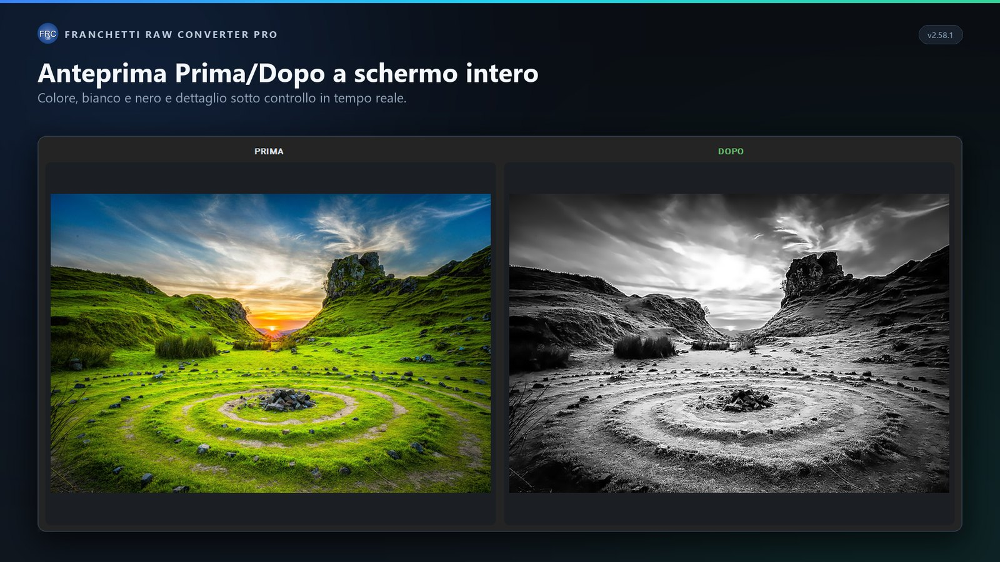
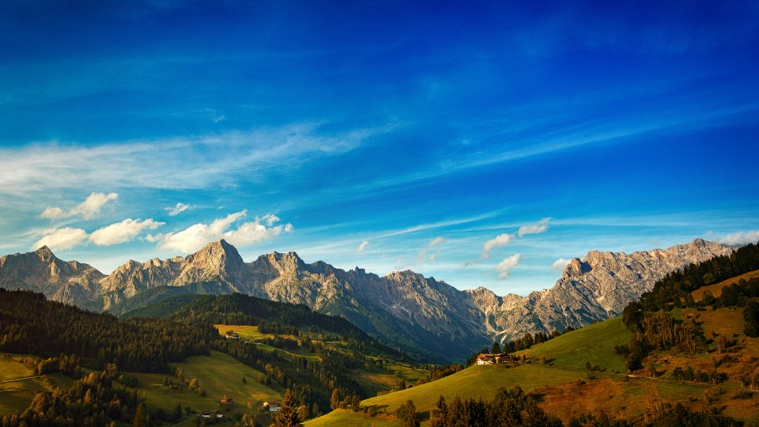
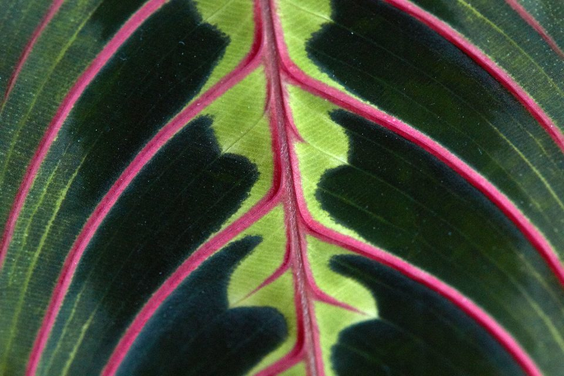
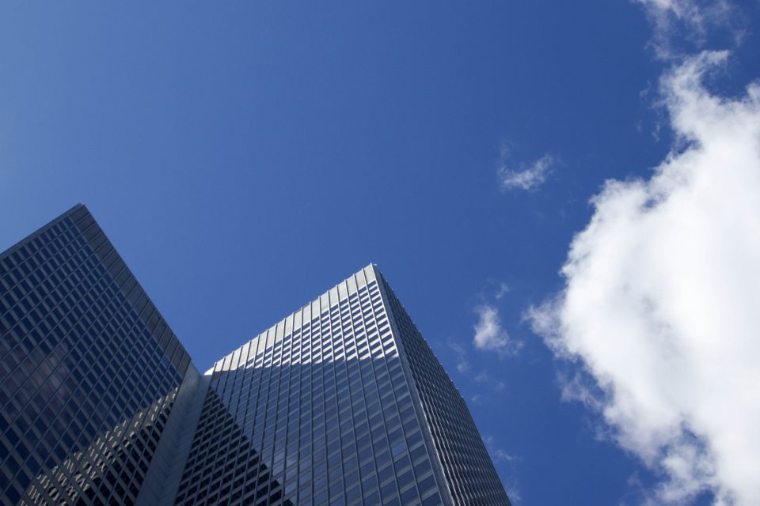

Scegli le cartelle
Trascina una o più cartelle: la scansione è ricorsiva e riconosce oltre 25 formati RAW.
Convertitore RAW desktop per Windows: batch ricorsivo su intere cartelle, profili di sviluppo, preset portabili e LUT 3D. Tutto in locale, sulla CPU. Gli originali restano intatti.
I file RAW vengono letti e mai modificati, spostati o cancellati.
Nessuna connessione richiesta, nessuna telemetria, nessun caricamento.
Metadati, autore e copyright mantenuti nei formati che li supportano.
Solo CPU: nessun servizio cloud, nessuna coda, nessun credito da consumare.
Dalla cartella dei RAW alla consegna, sempre con lo stesso ordine di operazioni e lo stesso risultato ripetibile.
Trascina una o più cartelle: la scansione è ricorsiva e riconosce oltre 25 formati RAW.
Tono, colore, curva, riduzione rumore per ISO, nitidezza, grana, vignettatura e split toning.
Formato, lato lungo, qualità, schema dei nomi, watermark e metadati da conservare.
Anteprima fedele prima di partire, poi batch completo nella cartella che hai scelto.
Niente pannelli infiniti: le regolazioni che contano per una conversione RAW pulita, con la possibilità di salvare il risultato e ripeterlo su migliaia di file.
Intere cartelle, sottocartelle comprese, in un solo passaggio. La coda mostra file elaborati, saltati ed errori.
Un profilo Bilanciato per la resa di riferimento e un profilo Veloce per i grandi volumi, senza cambiare la pipeline predefinita.
Denoise guidato dal valore ISO dello scatto e dal dettaglio che vuoi conservare: pulizia dove serve, texture dove conta.
JPEG o TIFF, lato lungo in pixel, qualità, schema dei nomi con prefisso e suffisso, gestione dei file già esistenti.
Un file .frcpreset è JSON leggibile: solo dati, mai codice. Import, esporta, condividi, applica con anteprima.
LUT .cube con intensità regolabile e interpolazione trilineare, più split toning separato su ombre e luci.
Preset portabili, import XMP in beta, LUT 3D e un profilo Veloce sensibilmente più rapido. La pipeline predefinita non cambia.
Nome, autore, descrizione, tag e versione minima; sezione look con tono, colore, curva, denoise, nitidezza, grana, vignettatura e split toning; sezione output facoltativa. Nessun percorso, nessuna credenziale, nessun codice.
I preset Lightroom .xmp vengono mappati in modo parziale: esposizione, luci, ombre, bianchi, neri, contrasto, vivacità, chiarezza, dehaze, riduzione rumore, nitidezza, vignettatura, grana e split toning. Restano fuori profili camera, curve puntuali, texture e film simulation.
Applicazione con interpolazione trilineare, intensità regolabile e calcolo a blocchi: una foto da 24–60 MP non alloca centinaia di MB. Se il file non è leggibile, l'immagine resta invariata.
Uno ZIP con manifest.json e i file dei preset; ogni voce è verificata con SHA-256 e importata solo manualmente. Nessun download automatico.
Batch, anteprima e regolazioni avanzate: le stesse finestre che usi durante la selezione e la consegna.



Gli originali non si toccano. Mai.
Il programma apre i RAW in sola lettura e scrive solo nella cartella di output che scegli. Nessun file nascosto, nessuna copia temporanea accanto agli scatti, nessuna modifica ai metadati di origine.
La stessa pipeline regge soggetti con esigenze opposte: cielo e vegetazione, dettaglio fine, linee e geometrie.



Fotografie di repertorio con licenza CC0 (pubblico dominio), usate come esempio di genere: non sono elaborazioni prodotte dal programma.
Oltre 25 formati RAW: Sony ARW, Canon CR2 e CR3, Nikon NEF, Fujifilm RAF, Olympus ORF, Panasonic RW2, DNG e altri.
La scansione è ricorsiva e ignora i file già elaborati.
JPEG e TIFF, con lato lungo, qualità e schema dei nomi configurabili.
EXIF, autore e copyright conservati dove il formato li supporta.
Windows 10 e Windows 11, 64 bit.
Nessuna dipendenza esterna da installare: il programma è autonomo.
Installer per-utente, senza privilegi di amministratore, oppure versione portable.
Disinstallazione gestita dall'installer, che rimuove il programma e la voce nel menu Start.
Sì. La versione per Windows è gratuita e non richiede account, abbonamento o licenza da attivare.
No. I RAW sono aperti in sola lettura e i risultati vengono scritti esclusivamente nella cartella di output che scegli. Nessun file viene spostato, rinominato o cancellato.
No. Il programma funziona interamente offline e non effettua chiamate di rete, né invia dati di utilizzo.
L'installer colloca il programma nel profilo dell'utente, crea la voce nel menu Start e permette la disinstallazione dalle impostazioni di Windows. La versione portable è un singolo eseguibile: non installa nulla e si avvia dove la copi.
L'installer non è firmato con un certificato commerciale, quindi SmartScreen può chiedere conferma la prima volta. Puoi verificare l'integrità del file con l'hash SHA-256 riportato qui sotto, oppure selezionare «Ulteriori informazioni» e «Esegui comunque».
I formati RAW più diffusi: Sony ARW, Canon CR2 e CR3, Nikon NEF, Fujifilm RAF, Olympus ORF, Panasonic RW2, DNG e altri, per oltre 25 estensioni riconosciute.
Un solo file, nessun download durante l'installazione. Installazione per-utente, senza privilegi di amministratore, con disinstallazione gestita dall'installer.
Versione 2.58.1 · 101.165.696 byte · Windows 10/11 x64 · gratuito
316a34c16d45f6e3cca05e517b95797d
83bc0e88adf4199659025e4cb1b86405
Verifica con Prompt dei comandi: